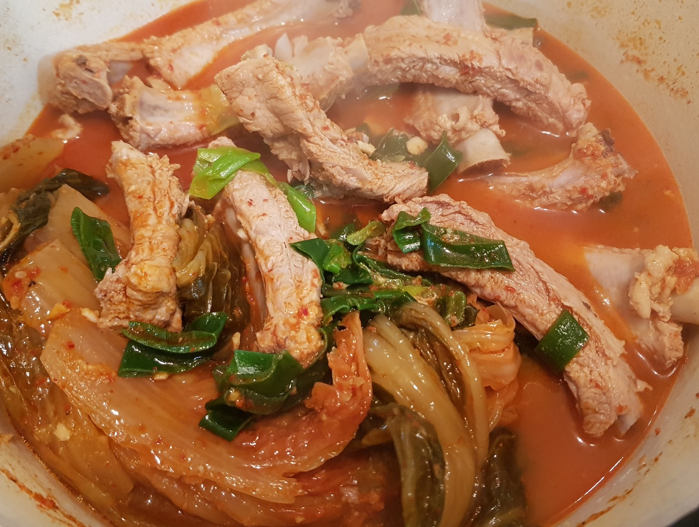

등갈비김치찜

- 재료
등갈비 1kg, 김치 1/2포기, 맛술 2T, 다진마늘 2T, 고춧가루 3T, 들기름 1T, 후추 톡톡,
국간장 3T, 설탕 1/3T, 김치국물 100ml, 대파 1개, 물 1L
- 조리순서
- 등갈비는 찬물에 30분 담궈 핏물을 제거해줍니다.
냄비에 물을 끓인 후 맛술 2T 넣고, 등갈비를 1분정도 끓여서 찬물에 헹굽니다.
- 다진마늘 2T, 고춧가루 2T, 국간장 3T, 설탕 1/3T, 들기름 1T, 후추, 김치국물 100ml를 섞어 양념을 만듭니다.
냄비에 데친 등갈비를 넣고 양념과 골고루 섞은 후 김치 1/2포기를 위에 올려줍니다.
- 물 1L를 넣고 뚜껑을 덮은 상태로 센 불로 끓인 후, 끓으면 중약불로 줄여 50분 익혀줍니다.
- 대파 1개를 쏭쏭 썰어서 위에 얹고 잠시 기다리면 완성!